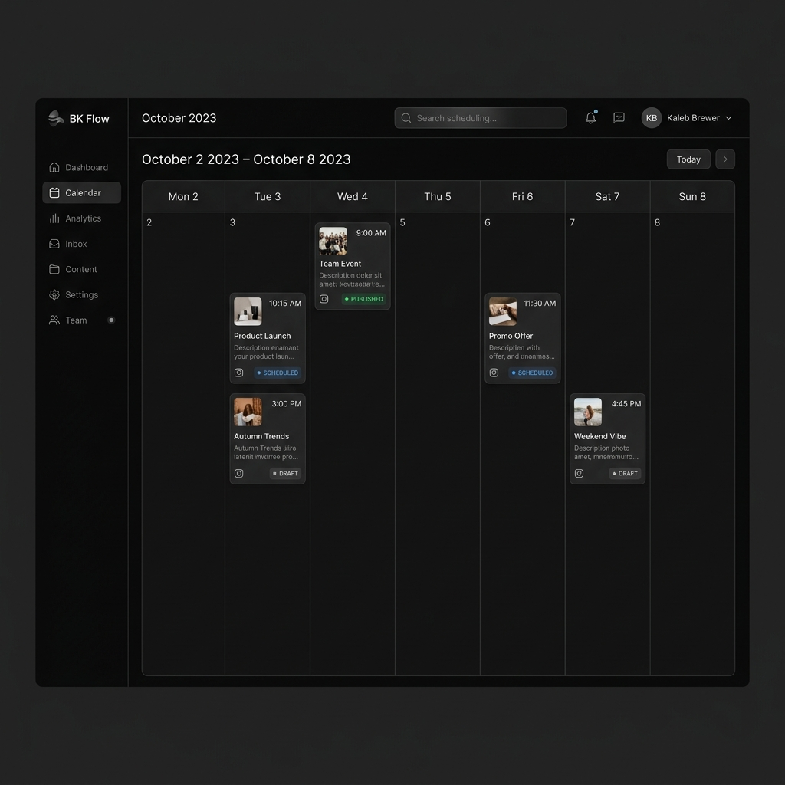

SaaS B2B / Automação
BK Flow
SaaS colossal focado em agências de marketing. Gestão de métricas, orquestração de publicações e calendário editorial com autopublicação no Instagram via Meta Graph API. Visão Multi-Tenant com níveis de permissão e controle de acesso.
A "Santíssima Trindade" do Frontend: React Query + Zustand + Shadcn
Ler estudo de caso →